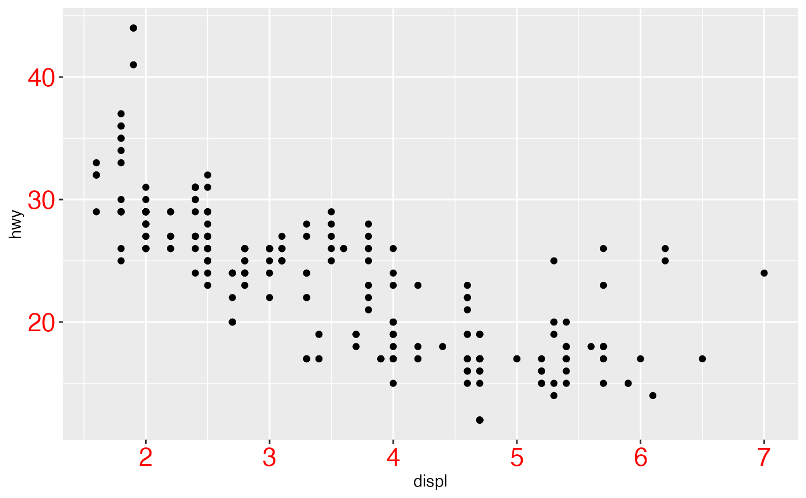
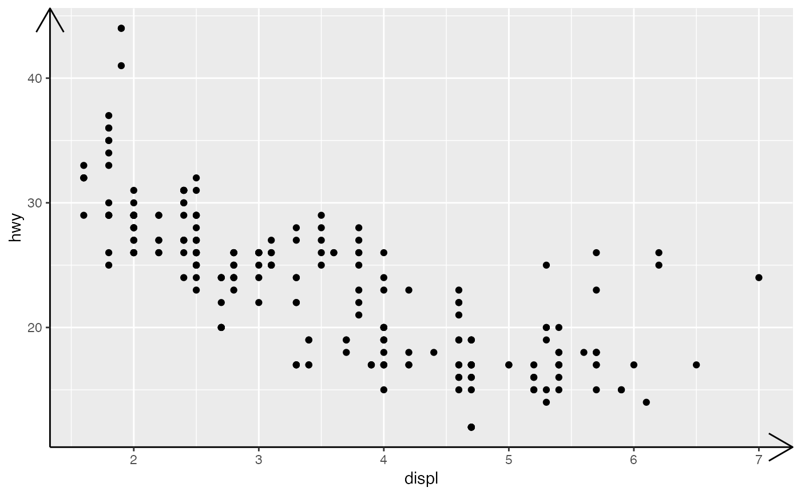
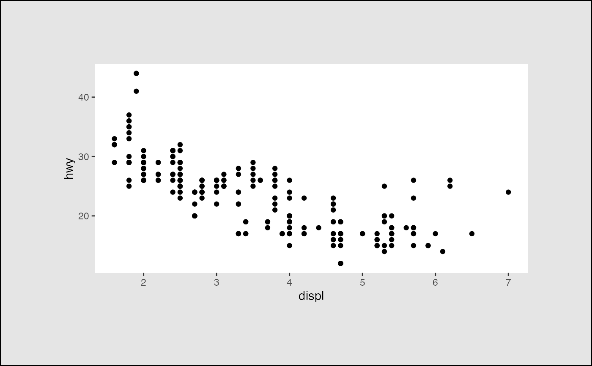
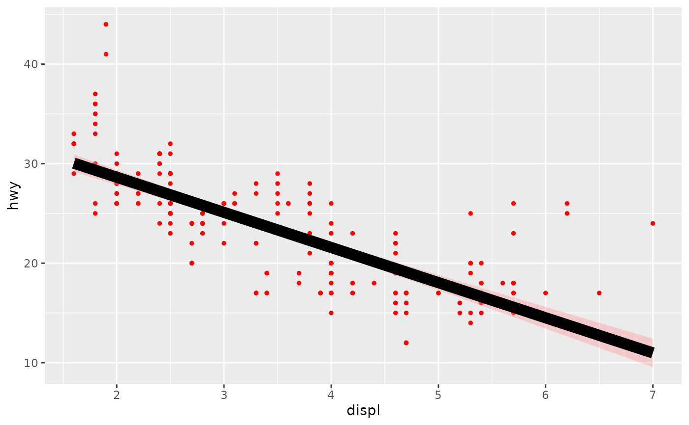
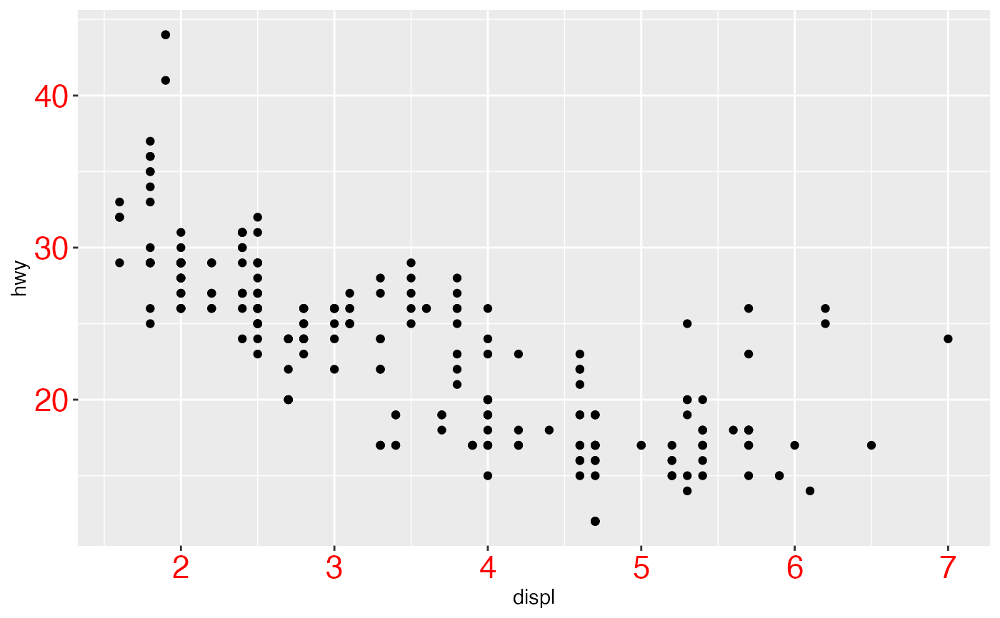
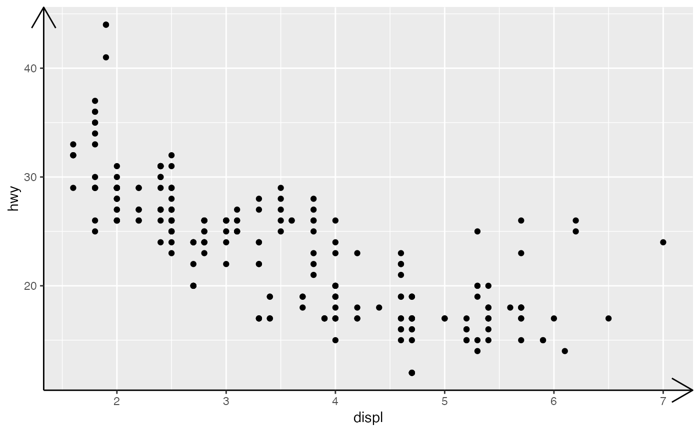
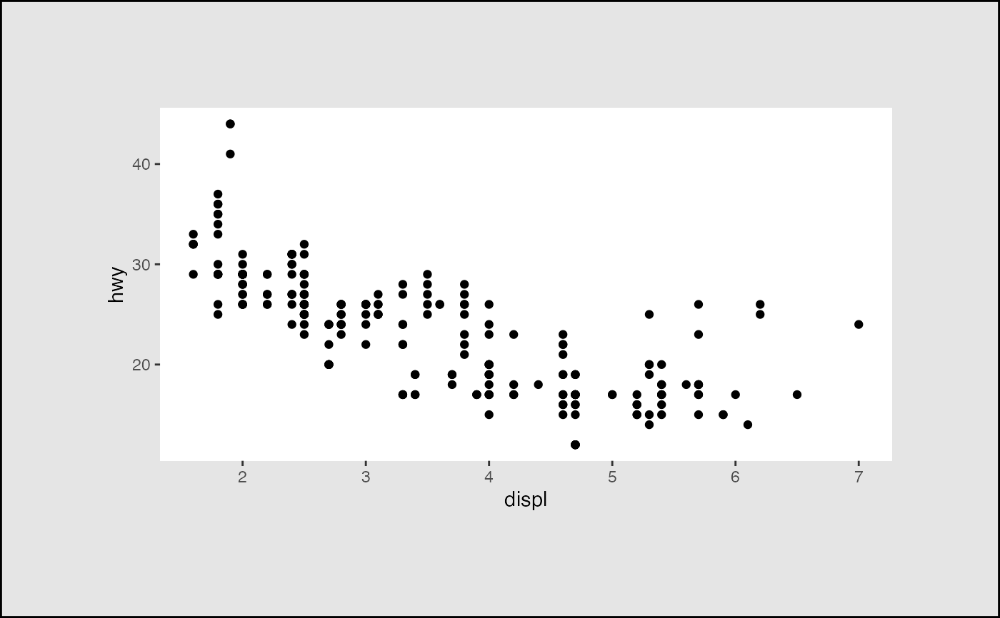
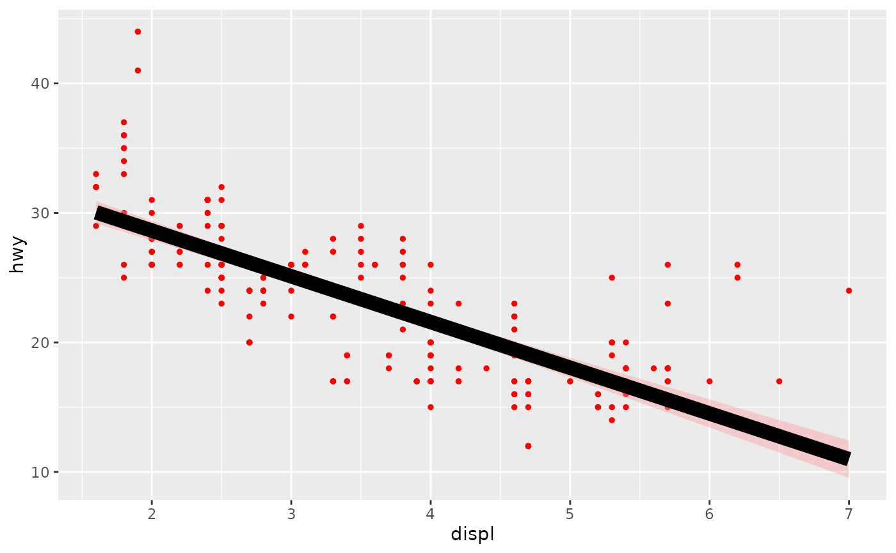

In conjunction with the theme system, the element_ functions
specify the display of how non-data components of the plot are drawn.
element_blank(): draws nothing, and assigns no space.element_rect(): borders and backgrounds.element_line(): lines.element_text(): text.element_geom(): defaults for drawing layers.
rel() is used to specify sizes relative to the parent,
margin() is used to specify the margins of elements.
Usage
element_blank()
element_rect(
fill = NULL,
colour = NULL,
linewidth = NULL,
linetype = NULL,
color = NULL,
inherit.blank = FALSE,
size = deprecated()
)
element_line(
colour = NULL,
linewidth = NULL,
linetype = NULL,
lineend = NULL,
color = NULL,
arrow = NULL,
arrow.fill = NULL,
inherit.blank = FALSE,
size = deprecated()
)
element_text(
family = NULL,
face = NULL,
colour = NULL,
size = NULL,
hjust = NULL,
vjust = NULL,
angle = NULL,
lineheight = NULL,
color = NULL,
margin = NULL,
debug = NULL,
inherit.blank = FALSE
)
element_geom(
ink = NULL,
paper = NULL,
accent = NULL,
linewidth = NULL,
borderwidth = NULL,
linetype = NULL,
bordertype = NULL,
family = NULL,
fontsize = NULL,
pointsize = NULL,
pointshape = NULL
)
rel(x)
margin(t = 0, r = 0, b = 0, l = 0, unit = "pt")Arguments
- fill
Fill colour.
- colour, color
Line/border colour. Color is an alias for colour.
- linewidth, borderwidth
Line/border size in mm.
- linetype, bordertype
Line type for lines and borders respectively. An integer (0:8), a name (blank, solid, dashed, dotted, dotdash, longdash, twodash), or a string with an even number (up to eight) of hexadecimal digits which give the lengths in consecutive positions in the string.
- inherit.blank
Should this element inherit the existence of an
element_blankamong its parents? IfTRUEthe existence of a blank element among its parents will cause this element to be blank as well. IfFALSEany blank parent element will be ignored when calculating final element state.- size, fontsize
text size in pts.
- lineend
Line end Line end style (round, butt, square)
- arrow
Arrow specification, as created by
grid::arrow()- arrow.fill
Fill colour for arrows.
- family
Font family
- face
Font face ("plain", "italic", "bold", "bold.italic")
- hjust
Horizontal justification (in \([0, 1]\))
- vjust
Vertical justification (in \([0, 1]\))
- angle
Angle (in \([0, 360]\))
- lineheight
Line height
- margin
Margins around the text. See
margin()for more details. When creating a theme, the margins should be placed on the side of the text facing towards the center of the plot.- debug
If
TRUE, aids visual debugging by drawing a solid rectangle behind the complete text area, and a point where each label is anchored.- ink
Foreground colour.
- paper
Background colour.
- accent
Accent colour.
- pointsize
Size for points in mm.
- pointshape
Shape for points (1-25).
- x
A single number specifying size relative to parent element.
- t, r, b, l
Dimensions of each margin. (To remember order, think trouble).
- unit
Default units of dimensions. Defaults to "pt" so it can be most easily scaled with the text.
Examples
plot <- ggplot(mpg, aes(displ, hwy)) + geom_point()
plot + theme(
panel.background = element_blank(),
axis.text = element_blank()
)
 plot + theme(
axis.text = element_text(colour = "red", size = rel(1.5))
)

plot + theme(
axis.line = element_line(arrow = arrow())
)

plot + theme(
panel.background = element_rect(fill = "white"),
plot.margin = margin(2, 2, 2, 2, "cm"),
plot.background = element_rect(
fill = "grey90",
colour = "black",
linewidth = 1
)
)

ggplot(mpg, aes(displ, hwy)) +
geom_point() +
geom_smooth(formula = y ~ x, method = "lm") +
theme(geom = element_geom(
ink = "red", accent = "black",
pointsize = 1, linewidth = 2
))

plot + theme(
axis.text = element_text(colour = "red", size = rel(1.5))
)

plot + theme(
axis.line = element_line(arrow = arrow())
)

plot + theme(
panel.background = element_rect(fill = "white"),
plot.margin = margin(2, 2, 2, 2, "cm"),
plot.background = element_rect(
fill = "grey90",
colour = "black",
linewidth = 1
)
)

ggplot(mpg, aes(displ, hwy)) +
geom_point() +
geom_smooth(formula = y ~ x, method = "lm") +
theme(geom = element_geom(
ink = "red", accent = "black",
pointsize = 1, linewidth = 2
))
